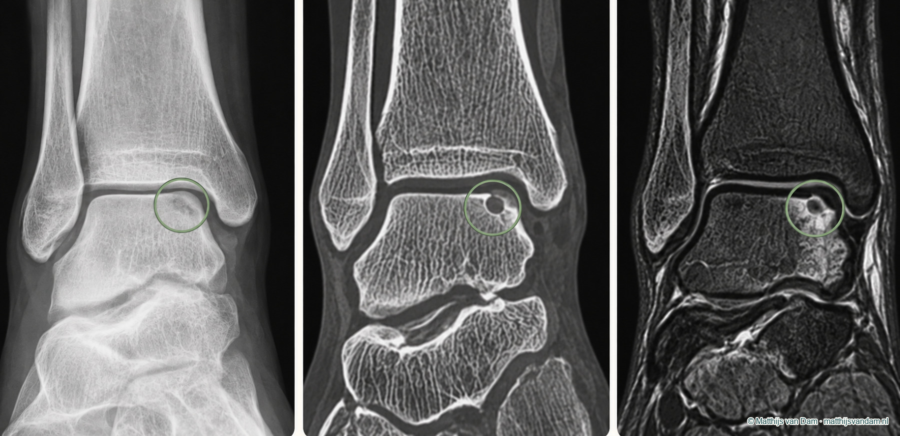
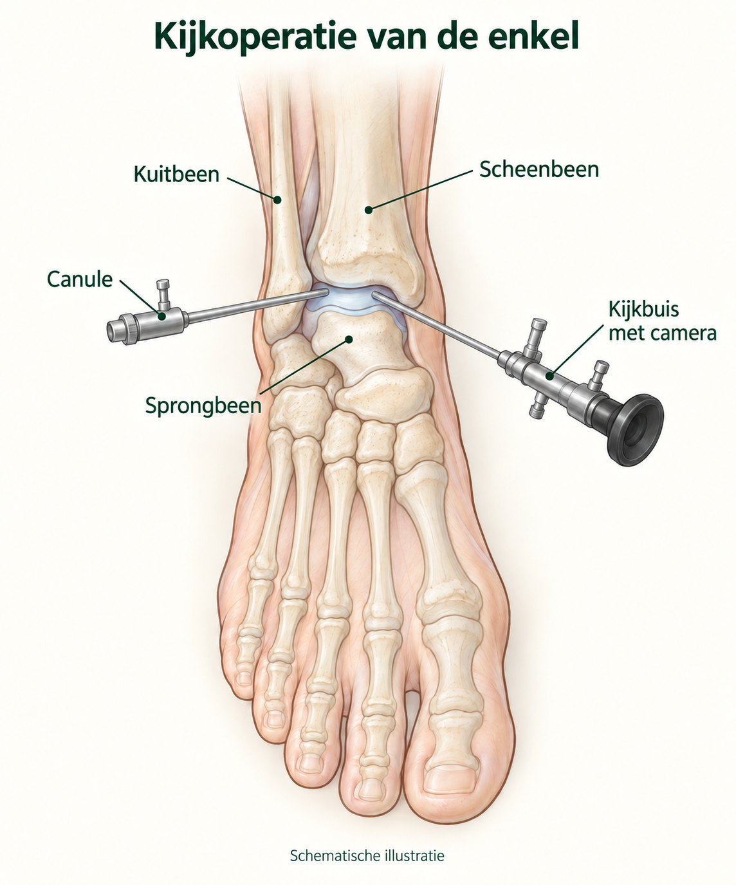

Wat is kraakbeenletsel van de enkel?
Kraakbeen is de gladde bekleding van een gewricht. In de enkel ligt het op het sprongbeen, het scheenbeen en het kuitbeen. Bij kraakbeenletsel van de enkel gaat het vaak om een beschadiging van kraakbeen en het bot direct daaronder. Dit wordt ook osteochondraal letsel of een osteochondraal defect genoemd: osteo verwijst naar bot en chondraal naar kraakbeen. De afkorting OLT staat voor osteochondraal letsel van de talus, het sprongbeen.

Veel osteochondrale letsels zitten in de talus, het sprongbeen. Ze kunnen klein en stabiel zijn, maar ook groter, Er zit een holte in het bot onder het kraakbeen. Zo'n holte wordt een cyste genoemd., losser of instabieler. Soms is er een los stukje bot of kraakbeen in het gewricht. Soms is er vooral botreactie onder het kraakbeen, terwijl het oppervlak minder duidelijk afwijkend lijkt.
Ontstaan en risicofactoren
Een kraakbeenletsel kan ontstaan na een enkelverzwikking, een val, sporttrauma of ander letsel waarbij het sprongbeen hard tegen het scheenbeen of kuitbeen komt. Soms is er direct veel pijn en zwelling. Soms lijkt het letsel eerst op een gewone verzwikking, maar blijft er maanden later diepe pijn of zwelling na belasting bestaan.
Herhaald doorzwikken kan kraakbeenletsel onderhouden of ermee samengaan. Daarom is de relatie met chronische enkelinstabiliteit belangrijk. Wanneer wordt gedacht dat je misschien een kraakbeenletsel hebt, wordt er ook gekeken naar bijkomende problemen, zoals inklemming (impingement), een afwijkende voetstand, eerder enkelletsel of een los stukje bot of kraakbeen in het gewricht. Daarbij wordt beoordeeld hoe deze samenhangen met het kraakbeenletsel en de klachten.
Niet elk kraakbeenletsel heeft een duidelijk trauma als oorzaak. Sommige letsels worden ontdekt bij onderzoek naar langdurige enkelpijn.
Een kraakbeendefect kan soms bij toeval op een scan worden gevonden, zonder dat het klachten veroorzaakt. Daarom wordt beoordeeld of de afwijking past bij de klachten en het lichamelijk onderzoek. Daarbij wordt ook gekeken naar de stabiliteit en stand van de enkel en eventuele eerdere verzwikkingen.
Welke klachten kunnen erbij passen?
Klachten kunnen bestaan uit diepe pijn in de enkel, zwelling na belasting, haperen, klikken, blokkeren, een slotgevoel of pijn die terugkomt zodra sport of langere belasting wordt opgebouwd. Soms is er vooral een zeurende diepe gewrichtspijn. Soms is de pijn wisselend en afhankelijk van belasting.
De pijn kan aan de binnenzijde, buitenzijde of voorzijde van de enkel worden gevoeld. De plek hangt af van waar het letsel zit en welke bewegingen het uitlokken. Bij een los fragment kunnen klachten mechanischer zijn: plots haperen, blokkeren of een gevoel dat er iets in het gewricht blijft steken.
Onzekerheid of doorzwikken kan komen door pijn, maar ook door instabiliteit van de enkelbanden. Daarom is het niet genoeg om alleen naar het kraakbeen te kijken. De hele enkel en voet-enkelketen moeten meegewogen worden.
Wat kan het ook zijn?
Een inklemming aan de voor- of achterzijde van de enkel kan vergelijkbare pijn geven. Ook enkelartrose kan pijn en stijfheid veroorzaken. Bij artrose zijn de veranderingen in het gewricht uitgebreider dan bij een plaatselijk kraakbeenletsel. Beide kunnen samen voorkomen.
Bij een warme, rode enkel met koorts of een ziek gevoel is medische beoordeling nodig om een infectie of acute ontsteking uit te sluiten.
Onderzoek en beeldvorming
De beoordeling begint met welke klachten je hebt: was er een verzwikking, wanneer kwam de pijn, is er zwelling na belasting, zijn er slotklachten, wat gebeurt er bij sportopbouw, en is er sprake van terugkerend doorzwikken?
Bij lichamelijk onderzoek wordt gekeken naar hoe iemand loopt, de stand en stabiliteit van de enkel en waar zwelling of pijn zit. Ook wordt onderzocht hoe de enkel heen en weer beweegt en of dat pijn doet. Een kraakbeenletsel kan niet betrouwbaar alleen met een druktest worden vastgesteld.
Röntgenfoto's laten het bot en eventuele artrose zien, maar kraakbeenletsel is daarop niet altijd zichtbaar. Een MRI brengt het kraakbeen en het bot eronder in beeld. Een CT laat de vorm van het bot nauwkeuriger zien.

Welke behandelrichtingen kunnen worden besproken?
De eerste stap is beoordelen of het letsel stabiel lijkt en of haperen, blokkeren, een los fragment of enkelinstabiliteit meespeelt. Bij kleinere, stabiele letsels of beperkte klachten kan de route beginnen met het verminderen van uitlokkende belasting en zo nodig tijdelijke bescherming. Daarna kan een fysiotherapeut begeleiden bij het geleidelijk opbouwen van beweeglijkheid, kracht, controle en sportbelasting. De fysiotherapeut helpt oefeningen passend te maken bij de klachten en belastbaarheid, met aandacht voor eventuele instabiliteit, voetstand en sporttechniek.
Verminder tijdelijk bewegingen die diepe pijn, zwelling of haperen duidelijk uitlokken.
Soms wordt tijdelijk minder belasten of een brace besproken.
Een fysiotherapeut kan begeleiden bij het opbouwen van beweeglijkheid, kracht, balans en sportbelasting.
Instabiliteit, Inklemming van weefsel of bot bij het bewegen van de enkel., voetstand of trainingsopbouw kunnen mede bepalen of klachten terugkomen.
Pijnstilling of ontstekingsremmende medicatie kan onderdeel zijn van de behandeling. Injecties kunnen soms worden besproken om pijn of ontstekingsreactie te beïnvloeden, maar zijn geen standaardoplossing voor kraakbeenherstel. Mogelijke nadelen zijn napijn, infectie, bloedsuikerontregeling, huid- of vetweefselverandering. Een injectie kan weinig of slechts tijdelijk helpen. Minder pijn betekent niet dat een los stukje bot of kraakbeen of een inklemming is verholpen.
Wanneer komt een operatie in beeld?
Als pijn en beperkingen blijven bestaan ondanks behandeling, kan een orthopedisch chirurg beoordelen of een operatie zinvol is. Wanneer het kraakbeenletsel de klachten veroorzaakt, spreken we van Dit betekent dat het letsel klachten veroorzaakt. kraakbeenletsel.
Welke operatie mogelijk is, hangt af van het letsel en de klachten. Soms kan het letsel via een artroscopie worden behandeld. Dit is een kijkoperatie waarbij de orthopedisch chirurg met een camera in het enkelgewricht kijkt en via een tweede kleine opening instrumenten inbrengt om bijvoorbeeld los kraakbeen of geïrriteerd weefsel te verwijderen. Bij kleinere defecten kan microfracture of Met een dun boortje worden gaatjes in het bot gemaakt om een herstelreactie op gang te brengen. worden overwogen.
Bij microfracture maakt de orthopedisch chirurg kleine gaatjes in het bot onder het beschadigde kraakbeen. Hierdoor komen bloed en cellen uit het beenmerg vrij, die kunnen helpen om herstelweefsel te vormen. Dit is meestal vezelig kraakbeen: een soort reparatielaag die de beschadigde plek kan opvullen. Het kan helpen om pijn te verminderen en de enkel beter te gebruiken, maar is minder slijtvast dan het oorspronkelijke gewrichtskraakbeen. De enkel wordt dus niet weer helemaal zoals vóór het letsel en klachten kunnen blijven bestaan of terugkomen. Na een microfractuurbehandeling wordt de belasting van de enkel geleidelijk opgebouwd.

Soms is een andere operatie nodig, bijvoorbeeld om een los stukje bot en kraakbeen vast te zetten of een groter defect op te vullen. De orthopedisch chirurg bespreekt welke mogelijkheden bij het letsel passen. Volledig herstel van het kraakbeen is daarbij niet gegarandeerd.
Soms spelen ook andere problemen mee, zoals een instabiele enkel of een inklemming. Die kunnen ook behandeling nodig hebben.
Bij iedere operatie kunnen complicaties optreden, zoals een wond die minder goed geneest of een infectie. Ook kunnen pijn, zwelling of stijfheid blijven bestaan. Soms herstelt het letsel onvoldoende en is verdere behandeling nodig. De orthopedisch chirurg bespreekt vooraf welke risico's bij de gekozen operatie horen.
Wat bespreek je tijdens een consult?
Bedenk waar de pijn zit, wanneer die optreedt en wat je daardoor minder goed kunt doen. Vertel ook of de klachten na een verzwikking begonnen en welke behandelingen je al hebt geprobeerd.
Past het letsel bij mijn pijn en beperkingen, en welke kenmerken bepalen de keuze tussen niet-operatieve zorg en een operatie?
Waar kan je terecht?
Bij nieuwe of acute klachten is de huisarts of huisartsenpost vaak het eerste aanspreekpunt. Bij herstel, kracht, balans, sportopbouw of bracevragen kan fysiotherapie een rol spelen.
Als specialistische beoordeling passend is, kan de verwijzer gericht naar mij verwijzen via de gebruikelijke zorgkanalen. Bij een verwijzing op mijn naam voer ik de beoordeling in principe zelf uit. De wachttijd kan daardoor soms langer zijn. Voor afspraken, planning, uitslagen en praktische ziekenhuisinformatie zijn de officiële ETZ-kanalen leidend.
Is kraakbeenletsel van de enkel al elders vastgesteld of beoordeeld en is er behoefte aan een tweede mening, dan kan de verwijzer daarvoor ook gericht naar mij verwijzen. Ik beoordeel de situatie opnieuw; een tweede mening betekent niet automatisch dat de eerdere beoordeling of behandelrichting verandert.
Veelgestelde vragen
Wat is kraakbeenletsel van de enkel?
Kraakbeen is de gladde bekleding van het gewricht. Bij kraakbeenletsel van de enkel is een plek in deze bekleding beschadigd, vaak samen met het bot eronder. Meestal zit het letsel in het sprongbeen.
Kan kraakbeenletsel van de enkel ontstaan na een verzwikking?
Ja, bij een verzwikking kunnen het kraakbeen en het bot eronder beschadigd raken. Blijven pijn en zwelling bestaan na een verzwikking, dan kan verder onderzoek zinvol zijn.
Welke klachten kan kraakbeenletsel van de enkel geven?
Kraakbeenletsel kan diepe pijn in de enkel en zwelling na bewegen geven. Soms hapert of blokkeert de enkel. Deze klachten kunnen ook andere oorzaken hebben.
Wat is het verschil tussen kraakbeenletsel van de enkel en enkelartrose?
Bij kraakbeenletsel is meestal één plek in het kraakbeen en het bot eronder beschadigd. Bij enkelartrose zijn de veranderingen uitgebreider en kunnen ook andere delen van het gewricht betrokken zijn. Beide kunnen samen voorkomen.
Welke andere enkelklachten kunnen lijken op kraakbeenletsel?
Een inklemming aan de voor- of achterzijde van de enkel kan vergelijkbare pijn geven. Onderzoek helpt om te beoordelen waar de klachten vandaan komen.
Wanneer is een MRI of CT zinvol bij kraakbeenletsel van de enkel?
Een MRI kan het kraakbeen en het bot eronder in beeld brengen. Een CT laat de vorm van het bot nauwkeuriger zien. Welke scan zinvol is, hangt af van de klachten en het lichamelijk onderzoek.
Kan kraakbeenletsel van de enkel zonder operatie herstellen?
Een operatie is niet altijd nodig. Door de belasting tijdelijk aan te passen en met begeleiding van een fysiotherapeut weer op te bouwen, kunnen de klachten verminderen. Dat betekent niet altijd dat het beschadigde kraakbeen volledig herstelt.
Wanneer is een operatie bij kraakbeenletsel van de enkel een optie?
Als pijn en beperkingen blijven bestaan ondanks behandeling, kan een orthopedisch chirurg beoordelen of een operatie zinvol is. Soms kan het letsel worden behandeld via een kijkoperatie. Welke behandeling past, hangt af van het letsel en de klachten.